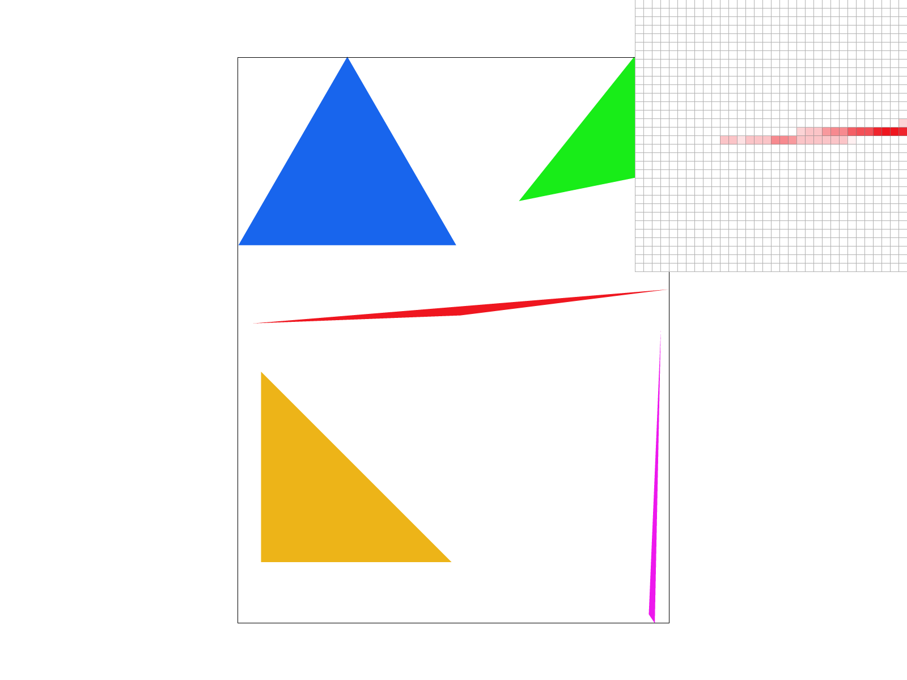
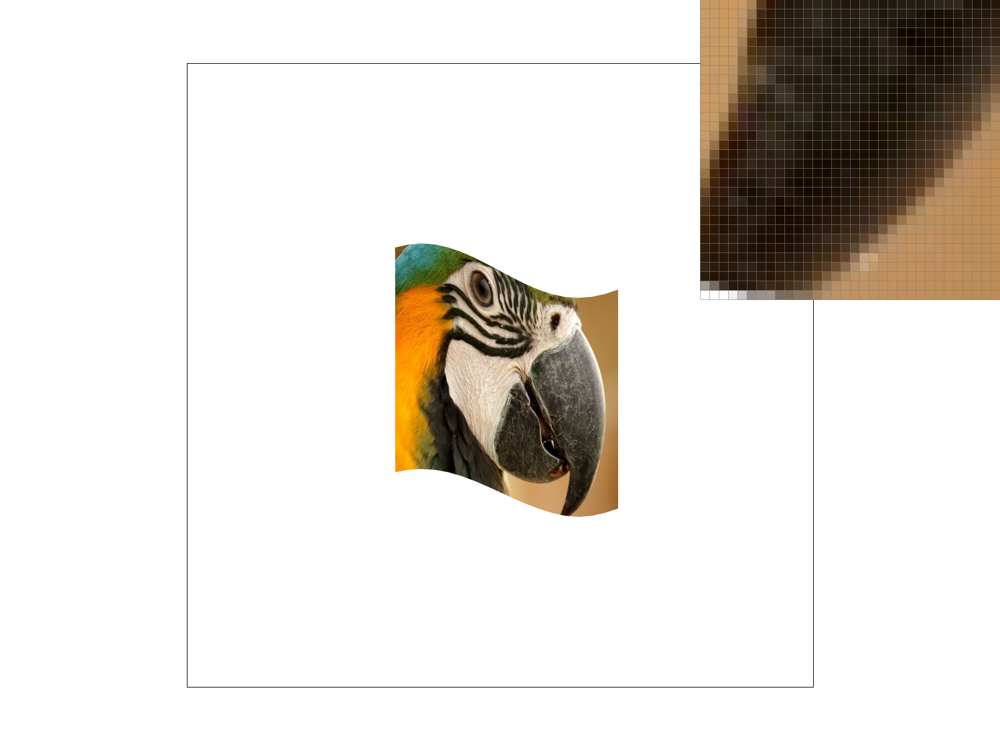

CS184/284A Spring 2025 Homework 1 Write-Up
Link to webpage: https://cal-cs184-student.github.io/hw-webpages-Awinfredwa/hw1/index.html
Link to GitHub repository: https://github.com/cal-cs184-student/hw-rasterizer-winfred
Overview
In this homework, I implemented a software rasterizer from scratch, building up from basic triangle drawing all the way to full texture mapping with mipmaps. Starting with a simple bounding-box triangle test, I added supersampling for antialiasing, affine transforms to animate a robot figure, barycentric coordinate interpolation for smooth color gradients, and finally two levels of texture sampling (nearest vs. bilinear pixel sampling, and zero/nearest/linear mip-level selection). The most interesting takeaway was seeing how each technique builds on the last: supersampling, bilinear filtering, and trilinear mipmapping all attack the same aliasing problem from different angles, and combining them produces dramatically cleaner results than any single method alone.
Task 1: Drawing Single-Color Triangles
To rasterize a triangle, I first compute a tight axis-aligned bounding box by taking the min and max of the three vertex x- and y-coordinates (clamped to the framebuffer dimensions). I then iterate over every integer pixel \((x, y)\) inside that bounding box and test whether the pixel center \((x + 0.5,\; y + 0.5)\) lies inside the triangle using the three-edge (half-plane) test: for each directed edge of the triangle I compute the signed value \( L_i = (P - V_i) \times (V_{i+1} - V_i) \) and check that all three values share the same sign (handling both winding orders). Only pixels that pass all three tests are filled.
This algorithm is no worse than checking every sample within the bounding box because that is exactly what it does — it loops over the smallest possible rectangle enclosing the triangle exactly once, performing a constant-time point-in-triangle test per pixel. No pixel outside the bounding box is ever visited.

|

|
Task 2: Antialiasing by Supersampling
Algorithm & data structures: The sample buffer stores width × height × sample_rate Color objects, with all samples for a given pixel stored consecutively. For sample rate \(N\), each pixel is subdivided into a \(\sqrt{N} \times \sqrt{N}\) grid and each sub-pixel is sampled at its center: \( x + (sub\_x + 0.5)/\sqrt{N} \). The three-edge test is run for every sub-pixel sample, and results are stored at index (y * width + x) * sample_rate + (sub_y * sqrt_rate + sub_x).
Why supersampling is useful: Single sampling produces harsh staircase edges. Supersampling lets pixels along edges blend between the triangle color and the background based on how much of the pixel is actually covered, yielding smooth antialiased edges — especially important for thin triangles and sharp corners.
Pipeline modifications:
rasterize_triangle(): loops over the \(\sqrt{N} \times \sqrt{N}\) sub-pixel grid and tests each sub-sample.fill_pixel(): fills allsample_ratesamples with the same color for points/lines (no antialiasing needed).set_sample_rate()&set_framebuffer_target(): resize the sample buffer towidth × height × sample_rate.resolve_to_framebuffer(): averages all samples per pixel and converts the float Color to 8-bit RGB.
How supersampling antialiases: At a triangle edge, some sub-pixel samples fall inside and others outside. Averaging them produces a blended color proportional to coverage, creating smooth gradients instead of hard transitions.
|
|
|
|

|
|
Rate 1 gives a binary inside/outside decision. Rate 4 provides 5 coverage levels (0 %, 25 %, 50 %, 75 %, 100 %). Rate 16 provides 17 levels (0 %, 6.25 %, …, 100 %), enabling much finer antialiasing — which is why the skinny triangle corner that completely disappears at rate 1 gradually reappears and smooths out at higher rates.
Task 3: Transforms
Cubeman surrenders — both arms are raised overhead in a classic surrender pose.
Task 4: Barycentric coordinates
Barycentric coordinates express any point \(P\) inside a triangle as a weighted combination of its three vertices \(A\), \(B\), \(C\): \[ P = u \cdot A + v \cdot B + w \cdot C, \quad u + v + w = 1, \quad u,v,w \ge 0. \] Each weight equals the fraction of the total triangle area in the sub-triangle opposite that vertex: \(u\) is the area of \(\triangle PBC\) divided by the area of \(\triangle ABC\), and so on. This makes barycentric coordinates a natural tool for interpolating any per-vertex quantity (color, UV, normal) smoothly across the interior of a triangle.
The image below shows a single triangle whose vertices are pure red, green, and blue. Every interior pixel blends the three vertex colors weighted by its barycentric coordinates, producing a smooth color gradient across the face.

|
Task 5: "Pixel sampling" for texture mapping
What is pixel sampling: When we map a texture onto a triangle, each screen pixel corresponds to a continuous UV coordinate in \([0,1]^2\). Because textures are discrete grids of texels, we must decide which texel(s) to read. Two common strategies are:
- Nearest: Converts UV to texel coordinates by multiplying by the texture dimensions, then rounds to the nearest integer. Fast but produces blocky, pixelated results when magnifying (similar to Minecraft's look).
- Bilinear: Converts UV to continuous texel coordinates, finds the four surrounding texels, and blends them using fractional weights \(s\) and \(t\) (horizontal and vertical lerps). Produces smooth, gradient color transitions at the cost of four texture fetches and three lerps per sample.
Implementation: For nearest, I subtract 0.5 (texels are centered at 0.5, 1.5, …), call round(), clamp to bounds, and call get_texel(). For bilinear, I subtract 0.5, use floor() to identify the four neighbors, retrieve them all, compute \(s = x - \lfloor x \rfloor\) and \(t = y - \lfloor y \rfloor\), and perform two horizontal lerps followed by one vertical lerp.
|
|
|
|
|

|
At 1 spp there is a large visual difference: nearest produces harsh, blocky edges with visible texel boundaries, while bilinear creates smooth color gradients. At 16 spp, both methods look similarly smooth because averaging 16 nearest samples from slightly different UV positions already acts as a blur comparable to bilinear filtering. The gap between the two methods is largest when the texture is magnified (one screen pixel covers a fraction of a texel) and the sample rate is low — exactly the regime where a single discrete texel lookup is most jarring.
Task 6: "Level Sampling" with mipmaps for texture mapping
What is level sampling: When a texture is viewed at a distance or at a steep angle, a single screen pixel covers a large region of the texture; sampling only one texel from that region causes aliasing. Mipmaps precompute half-resolution copies of the texture at each successive level. Level sampling selects (or blends between) the mip level whose texel footprint best matches the screen pixel footprint, eliminating minification aliasing efficiently.
Implementation: get_level() estimates the appropriate level by computing the UV footprint of one screen pixel. The differentials \(du/dx,\, dv/dx,\, du/dy,\, dv/dy\) come from evaluating barycentric UVs at \((x+1, y)\) and \((x, y+1)\) and subtracting the center UV. After scaling by the texture dimensions to convert to texel units, the level is:
\[ D = \log_2\!\left(\max\!\left(\left\|\frac{d\mathbf{uv}}{dx}\right\|,\; \left\|\frac{d\mathbf{uv}}{dy}\right\|\right)\right). \]
L_ZERO always uses mip level 0. L_NEAREST rounds \(D\) to the nearest integer and clamps. L_LINEAR samples both \(\lfloor D \rfloor\) and \(\lceil D \rceil\) and blends them with weight \(t = D - \lfloor D \rfloor\).
Tradeoffs:
- Pixel sampling (nearest vs. bilinear): Nearest is faster (1 fetch vs. 4). Neither requires extra memory. Bilinear smooths magnification artifacts but does nothing for minification aliasing.
- Level sampling (L_ZERO / L_NEAREST / L_LINEAR): L_ZERO is fastest, L_NEAREST slightly slower, L_LINEAR slowest (two full sample calls per pixel). Mipmaps add ~1/3 extra texture memory. L_ZERO gives no minification antialiasing; L_LINEAR is smoother than L_NEAREST but at higher cost.
- Supersampling: Very powerful antialiasing but memory and time cost scale linearly with sample rate.
|
|
|
|
|
|